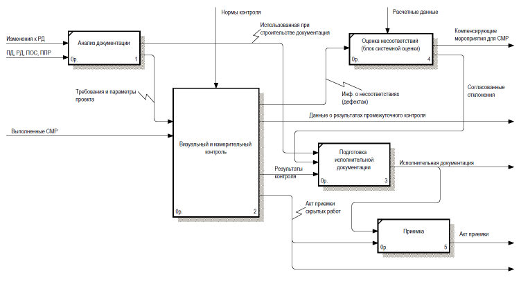
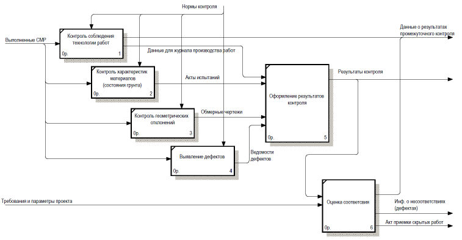
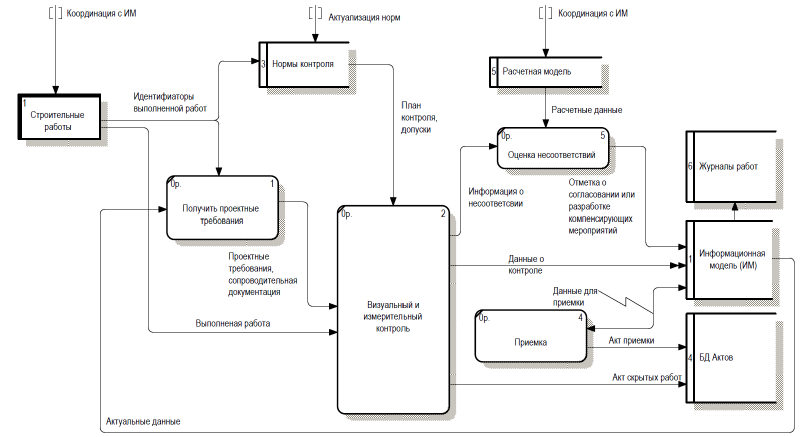

СП 471.1325800.2019 «Информационное моделирование в строительстве. Контроль каче»
О документе: разработчики, утверждение, регистрация, ключевые слова
СВОД ПРАВИЛ
СП 471.1325800.2019
Издание официальное
Москва 2019
Сведения о своде правил
1 ИСПОЛНИТЕЛЬ - АО «НИЦ «Строительство»
- 2 ВНЕСЕН Техническим комитетом по стандартизации ТК 465 «Строительство»
- 3 ПОДГОТОВЛЕН к утверждению Департаментом градостроительной деятельности и архитектуры Министерства строительства и жилищно-коммунального хозяйства Российской Федерации (Минстрой России)
- 4 УТВЕРЖДЕН приказом Министерства строительства и жилищно-коммунального хозяйства Российской Федерации от 24 декабря 2019 г. № 854/пр и введен в действие с 25 июня 2020 г.
- 5 ЗАРЕГИСТРИРОВАН Федеральным агентством по техническому регулированию и метрологии (Росстандарт)
- 6 ВВЕДЕН ВПЕРВЫЕ
В случае пересмотра (замены) или отмены настоящего свода правил соответствующее уведомление будет опубликовано в установленном порядке. Соответствующая информация, уведомление и тексты размещаются также в информационной системе общего пользования - на официальном сайте разработчика (Минстрой России) в сети Интернет
© Минстрой России, 2019
Настоящий нормативный документ не может быть полностью или частично воспроизведен, тиражирован и распространен в качестве официального издания на территории Российской Федерации без разрешения Минстроя России
Приложение Е
Примерный перечень актов, формируемых на основе цифровых информационных моделей и разрабатываемых форм для операционного контроля качества и приемки по элементам и группам элементов ……………………………
Библиография……………………………………………………………………..
Дата введения - 2020-06-25
УДК ОКС 35.240.01
35.240.67
Ключевые слова: информационное моделирование, обмен данными, жизненный цикл, контроль качества производства строительных работ
Руководитель организации-разработчика:
Врио генерального директора
АО «НИЦ «Строительство»
Н.А. Климова
Руководитель работ:
Директор ЦНИИСК им. В.А. Кучеренко
И.И. Ведяков
Руководитель темы:
Зав. лабораторией автоматизации иссле-
дований и проектирования сооружений
(ЛАИПС)
Ю.Н. Жук
Введение
Настоящий свод правил разработан с учетом обязательных требований, установленных в федеральных законах от 27 декабря 2002 г. № 184-ФЗ «О техническом регулировании», от 30 декабря 2009 г. № 384-ФЗ «Технический регламент о безопасности зданий и сооружений» в целях выработки общих требований и правил контроля качества строительных работ на основе использования информационных моделей.
Настоящий свод правил разработан в целях формирования требований к информационным моделям объектов капитального строительства и работе с ними для сбора, обработки и хранения информации о качестве производства строительных работ. Внедрение таких подходов должно позволить повысить организационный уровень контроля качества и приемки готовой строительной продукции, уменьшить влияние человеческого фактора на организационно-управленческие решения и обеспечить повышение качества и надежности строительной продукции в целом.
Свод правил подготовлен авторским коллективом АО «НИЦ «Строительство» - ЦНИИСК им. В.А. Кучеренко (руководитель разработки - д-р техн. наук И.И. Ведяков , руководитель темы - канд. техн. наук Ю.Н. Жук , А.В. Ананьев , Б.В. Волков , Ю.А. Сыромятников ), НИИЖБ им. А.А. Гвоздева ( Д.В. Кузеванов , А.З. Сокуров ) при участии ГБУ «Мосстройразвитие» ( С.А. Волков, А.А. Чиков ), ООО «ЭКСИНКО» ( С.Л. Должников ), АО ИК «АСЭ» ( С.А. Горемыкин ), ООО «Инжстройпроект» ( И.Е. Виденин ).
1Область применения
2Нормативные ссылки
В настоящем своде правил использованы нормативные ссылки на следующие документы:
ГОСТ Р 57311 -2016 Моделирование информационное в строительстве. Требования к эксплуатационной документации объектов завершенного строительства
ИНФОРМАЦИОННОЕ МОДЕЛИРОВАНИЕ В СТРОИТЕЛЬСТВЕ контроль качества производства строительных работ
Building information modeling Construction quality control
СП .1325800.2019
ГОСТ Р 51872 -2019 Документация исполнительная геодезическая. Правила выполнения
СП 45.13330.2017 «СНиП 3.02.01-87 Земляные сооружения, основания и фундаменты» (с изменением №1)
СП 46.13330.2012 «СНиП 3.06.04-91 Мосты и трубы» (с изменениями № 1, № 3, № 4)
СП 48.13330.2011 «СНиП 12-01-2004 Организация строительств» (с изменением № 1)
- СП 68.13330.2017 «СНиП 3.01.04-87 Приемка в эксплуатацию законченных строительством объектов. Основные положения»
СП 69.13330.2016 «СНиП 3.02.03-84 Подземные горные выработки»
- СП 70.13330.2012 «СНиП 3.03.01-87 Несущие и ограждающие конструкции» (с изменениями № 1, № 3)
- СП 71.13330.2017 «СНиП 3.04.01-87 Изоляционные и отделочные покрытия» (с изменением № 1)
- СП 72.13330.2016 «СНиП 3.04.03-85 Защита строительных конструкций и сооружений от коррозии» (с изменением № 1)
- СП 73.13330.2016 «СНиП 3.05.01-85 Внутренние санитарно-технические системы зданий» (с изменением № 1)
- СП 74.13330.2011 «СНиП 3.05.03-85 Тепловые сети»
- СП 75.13330.2011 «СНиП 3.05.05-84 Технологическое оборудование и технологические трубопроводы»
- СП 76.13330.2016 «СНиП 3.05.06-85 Электротехнические устройства»
- СП 77.13330.2016 «СНиП 3.05.07-85 Системы автоматизации»
- СП 80.13330.2016 «СНиП 3.07.01-85 Гидротехнические сооружения речные»
СП 81.13330.2017 «СНиП 3.07.03-85* Мелиоративные системы и сооружения»
- СП 82.13330.2016 «СНиП III-10-75 Благоустройство территорий» (с изменением № 1)
СП 83.13330.2016 «СНиП III-24-75 Промышленные печи и кирпичные трубы»
- СП 86.13330.2014 «СНиП III-42-80* Магистральные трубопроводы» (с изменениями № 1, № 2)
- СП 87.13330.2011 «СНиП III-44-77 Тоннели железнодорожные, автодорожные и гидротехнические. Метрополитены»
СП 126.13330.2017 «СНиП 3.01.03-84 Геодезические работы в строительстве»
- СП 129.13330.2011 «СНиП 3.05.04-85* Наружные сети и сооружения водоснабжения и канализации»
- СП 245.1325800.2015 Защита от коррозии линейных объектов и сооружений в нефтегазовом комплексе. Правила производства и приемки работ
- СП 265.1325800.2016 Коллекторы коммуникационные. Правила проектирования и строительства
СП 284.1325800.2016 Трубопроводы промысловые для нефти и газа. Правила проектирования и производства работ
СП 293.1325800.2017 Системы фасадные теплоизоляционные композиционные с наружными штукатурными слоями. Правила проектирования и производства работ СП 301.1325800.2017 Информационное моделирование в строительстве. Правила организации работ производственно-техническими отделами
СП 328.1325800.2017 Информационное моделирование в строительстве. Правила описания компонентов информационной модели
- СП 331.1325800.2017 Информационное моделирование в строительстве. Правила обмена между информационными моделями объектов и моделями, используемыми в программных комплексах
СП 333.1325800.2017 Информационное моделирование в строительстве. Пра-
СП .1325800.2019
вила формирования информационной модели объектов на различных стадиях жизненного цикла
СП 404.1325800.2018 Информационное моделирование в строительстве. Правила разработки планов проектов, реализуемых с применением технологии информационного моделирования
СП 435.1325800.2018 Конструкции бетонные и железобетонные монолитные. Правила производства и приемки работ
Примечание -При пользовании настоящим сводом правил целесообразно проверить действие ссылочных документов в информационной системе общего пользования - на официальном сайте федерального органа исполнительной власти в сфере стандартизации в сети Интернет или по ежегодному информационному указателю «Национальные стандарты», который опубликован по состоянию на 1 января текущего года, и по выпускам ежемесячного информационного указателя «Национальные стандарты» за текущий год. Если заменен ссылочный документ, на который дана недатированная ссылка, то рекомендуется использовать действующую версию этого документа с учетом всех внесенных в данную версию изменений. Если заменен ссылочный документ, на который дана датированная ссылка, то рекомендуется использовать версию этого документа с указанным выше годом утверждения (принятия). Если после утверждения настоящего свода правил в ссылочный документ, на который дана датированная ссылка, внесено изменение, затрагивающее положение, на которое дана ссылка, то это положение рекомендуется применять без учета данного изменения. Если ссылочный документ отменен без замены, то положение, в котором дана ссылка на него, рекомендуется применять в части, не затрагивающей эту ссылку. Сведения о действии сводов правил целесообразно проверить в Федеральном информационном фонде стандартов
3Термины и определения
В настоящем своде правил применены термины по СП 48.13330, СП 331.1325800, СП 126.13330, а также следующие термины с соответствующими определениями:
- 3.1жизненный цикл здания или сооружения; ЖЦ
- Период, в течение которого осуществляются инженерные изыскания, проектирование, строительство (в том числе консервация), эксплуатация (в том числе текущие ремонты), реконструкция, капитальный ремонт, снос здания или сооружения.Источник: 2, статья 2, часть 2, пункт 5
- 3.2атрибутивные данные (атрибуты)
- Существенные свойства элемента цифровой информационной модели, определяющие его геометрию, характеристики, параметры выполнения и соответствия, представленные с помощью алфавитно-цифровых символов.
- 3.3проект в строительстве (инвестиционно-строительный проект); ИСП
- Комплекс взаимосвязанных мероприятий, направленных на создание объекта (основных фондов), комплекса объектов производственного или непроизводственного назначения, линейных сооружений в условиях временных и ресурсных ограничений. [ГОСТ Р 57363 -2016, пункт 3.4]
- 3.4информационная модель; ИМ
- Совокупность взаимосвязанных сведений, документов и материалов об объекте капитального строительства, формируемых в электронном виде на всех стадиях его жизненного цикла.
- 3.5цифровая информационная модель; ЦИМ
- Объектно-ориентированная параметрическая трехмерная модель, представляющая в цифровом виде физические, функциональные и прочие характеристики объекта (или его отдельных частей) в виде совокупности информационно насыщенных элементов.Источник: СП 333.1325800.2017, пункт 3.9.1
- 3.6инженерная цифровая модель местности; ИЦММ
- Форма представления инженерно-топографического плана в цифровом объектно-пространственном виде для автоматизированного решения инженерных задач и проектирования объектов строительства. ИЦММ состоит из цифровой модели рельефа и цифровой модели ситуации. [СП 333.1325800.2017, пункт 3.9.2]
- 3.7среда общих данных; СОД
- Комплекс программно-технических средств, представляющих единый источник данных, обеспечивающий совместное использование информации всеми участниками инвестиционно-строительного проекта.Источник: СП 333.1325800.2017, пункт 3.16
- 3.8элемент модели
- Часть цифровой информационной модели, представляющая конструкцию, компонент, систему, сборку в пределах объекта строительства или строительной площадки.
- 3.9группа элементов модели
- Совокупность элементов модели, объединенных по какому-либо общему признаку, к которым могут быть отнесены одни и те же данные.
- 3.10строительный элемент
- Составная часть строительной конструкции (ростверк, панель стены, плита перекрытия, лестничный марш, кольцо колодца, арматурный каркас монолитной железобетонной конструкции и т. д.).
- 3.11идентификатор
- Уникальное обозначение объекта, представленное с помощью алфавитно-цифровых символов, позволяющее отличать его от других объектов.
- 3.12строительный контроль
- Комплекс мероприятий, проводимых в процессе строительства, реконструкции, капитального ремонта объектов капитального строительства в целях проверки соответствия выполняемых работ проектной доку- ментации, требованиям технических регламентов, результатам инженерных изысканий, требованиям к строительству, реконструкции объекта капитального строительства, установленным на дату выдачи представленного для получения разрешения на строительство градостроительного плана земельного участка, а также разрешенному использованию земельного участка и ограничениям, установленным в соответствии с земельным и иным законодательством Российской Федерации.
- 3.13контроль качества производства строительных работ
- Составная часть строительного контроля, целью которой является проверка соответствия показателей качества строительной продукции и технологий выполнения строительных процессов установленным требованиям.
- 3.14дефект
- Каждое единичное отступление от проектных решений или неисполнение требований норм.
- 3.15права доступа
- Совокупность правил, регламентирующих порядок и условия доступа субъекта к объектам информационной модели, установленных собственником (владельцем) информации.
- 3.16приемка
- Процесс итоговой проверки соответствия строительной продукции показателям качества в целях сдачи подрядчиком результата выполненных по договору строительного подряда работ.
- 3.17первичные данные контроля
- Необработанные показания приборов, которыми выполнялся контроль (единичные результаты испытаний материалов, массивы данных натурных наблюдений и т. п.).
- 3.18обобщающие данные контроля
- Результаты обработки фактических характеристик и параметров строительных конструкций, инженерных систем и строительных элементов, подлежащие контролю и сравнению с проектными значениями.
4Общие положения
- освидетельствование геодезической разбивочной основы и разбивки осей объекта капитального строительства;
- входной контроль применяемых строительных материалов, изделий, конструкций и оборудования;
- контроль соблюдения правил складирования и хранения применяемых материалов, изделий и оборудования;
- операционный контроль в процессе выполнения и после завершения операций строительно-монтажных работ;
- освидетельствование выполненных работ, результаты которых становятся недоступными для контроля после начала выполнения последующих работ;
- освидетельствование ответственных строительных конструкций и участков систем инженерно-технического обеспечения;
- испытания и опробования технических устройств;
- оценка соответствия выполненных работ, конструкций, участков инженерных сетей.
- застройщик (технический заказчик) или его представители, осуществляющие строительный контроль;
- подрядчик (генеральный подрядчик) - лицо осуществляющее строительство;
- проектировщик (лицо, осуществившее подготовку проектной и рабочей документации, авторский надзор);
- представители строительных испытательных лабораторий и профильных организаций, выполняющих работы по оценке соответствия;
- органы государственного контроля и строительного надзора;
- представители иных уполномоченных органов и организаций в соответствии с условиями их участия в проекте.
- проектная информация;
- организационно-технологическая информация;
- регистрационная информация;
СП .1325800.2019
- первичные данные контроля;
- данные обработки;
- обобщающие данные;
- данные об ответственных лицах;
- прочая информация.
Примеры данных, относящихся к указанным видам информации, приведены в приложении Б.
5Общие требования к использованию информационных моделей при контроле качества строительных работ
Примечание -Информация о фактическом качестве является основой для последующей приемки и формирования данных для контроля выполненных физических объемов строительно-монтажных работ и формирования финансового результата строительства в рамках общих задач применения информационного моделирования при строительстве, включая различные этапы строительства.
- 5.4. В требованиях заказчика к использованию информационных моделей при контроле качества строительных работ должны быть отражены:
- виды и объемы строительных работ, подлежащих контролю качества с применением технологий информационного моделирования;
- виды информации по 4.7, подлежащие отражению в информационной модели;
- минимальные и дополнительные требования к информационным моделям и работе с ними по СП 333.1325800;
- порядок ведения и создания учетной документации, заполнения журналов, отчетных документов и др.;
- состав исполнительных схем и форм подготовки актов по объекту строительства, формируемых на основе информационных моделей;
- порядок взаимодействия участников ИСП при выполнении работ;
- форматы данных и методы информационного обмена.
Примечание -Конкретный перечень требований устанавливается заказчиком из условий реализации и специфики инвестиционно-строительного проекта.
- минимальные и дополнительные положения, предусмотренные СП 333.1325800;
- роли, функции и права доступа к различным видам информации участников работ по контролю качества;
- лицо, ответственное за поддержание данных в актуальном состоянии;
- порядок формирования исполнительной документации.
СП .1325800.2019
- в ЦИМ/ИЦММ, разработанных для различных этапов и разделов проекта;
- в технической документации, произведенной на основе ЦИМ/ИЦММ;
- в технической документации, произведенной без использования ЦИМ/ИЦММ;
- в иной документации и форматах хранения данных, которые возможно отобразить для анализа в ИМ или СОД.
- создание - доступ к ИМ или ее части с возможностью добавления, удаления и заполнения данными атрибутов существующих элементов моделей или дополнения моделей новыми элементами и атрибутами;
- запись -доступ к ИМ или ее части с возможностью изменения значений атрибутов существующих элементов моделей или дополнения моделей новыми элементами по результатам контроля без внесения изменений в существующие элементы ЦИМ;
- чтение - доступ к ИМ или ее части без возможности внесения изменений.
Все события в режиме доступа «создание» и «запись» должны сопровождаться регистрацией событий с указанием времени и лица, вносившего изменения в ИМ.
6Правила формирования информационных моделей и требования к уровню атрибутивной проработки компонентов при контроле качества строительных работ
СП .1325800.2019
Примечания
1 ЦИМ «Строительная модель качества» может являться составной частью модели процесса строительства и формироваться с учетом задач и этапов контроля;
2 При наличии проработанной ЦИМ предыдущих этапов ИСП, эффективной системы фильтрации информации и прав доступа к ней в рамках СОД цифровая модель «Исполнительная» и цифровая модель «Строительная модель качества» могут быть сформированы из разработанных проектных и строительных моделей, путем скрытия избыточной информации и добавления новых атрибутов к существующим элементам;
3 На начальных этапах внедрения технологий информационного моделирования в Российской Федерации, когда основная информация о строительстве будет представлена в виде документации, разработанной без применения ИМ, целесообразным будет оставаться формирование отдельных ЦИМ для контроля качества строительных работ.
Примечания:
1 Исходные данные для контроля качества могут содержаться в отдельных ЦИМ предыдущих этапов ИСП.
2. При использовании моделей детализации выше LOD 300 по СП 333.1325800 рекомендуется применять программные платформы для ИМ, предусматривающие возможность фильтрации информации и отображения модели в более низкой детализации.
7Общие правила и требования к проведению контроля качества строительных работ на основе информационных моделей
СП .1325800.2019
- анализ проектной, рабочей и организационно-технологической документации;
- разработка плана контроля;
- визуальный и измерительный контроль;
- подготовка исполнительной документации;
- оценка несоответствий;
- приемка (сопоставление с требованиями рабочей и проектной документации).
- анализ данных, ЦИМ, СОД, разработанных на предыдущих стадиях работ и реализации ИСП;
- приемка работ;
- подготовка исполнительной модели.
Общая функциональная схема процесса контроля качества и информационного обмена при контроле качества на основе информационных моделей приведена в приложении Г.
Примечание -При разработке плана контроля необходимо учитывать требования проектной, рабочей и организационно-технологической документации в части перечня видов строительных и монтажных работ, ответственных конструкций, участков сетей инженерно-технического обеспечения, подлежащих освидетельствованию с составлением соответствующих актов приемки перед производством последующих работ и устройством последующих конструкций, календарных сроков строительства, технологической последовательности работ, а также состав контролируемых операций, методы контроля для видов работ и отражение результатов контроля в исполнительной документации.
7.6Общие правила сбора и получения первичной информации о качестве строительных работ
- технологической последовательности работ и операций;
- осуществления входного контроля материалов и оборудования;
- выполнение требований о соблюдении допускаемых отклонений геометрических размеров;
- выполнения требований качества в целях недопущения образования дефектов или их своевременной фиксации.
СП .1325800.2019
в электронном виде. Электронная форма должна содержать обязательную информацию о лице, ответственном за ее заполнение, и дату проведения контроля. Порядок формирования записей по результатам контроля должен соответствовать 9.11.
- соответствие применяемых методов контроля и испытаний установленным нормативными документами;
- метрологическое обеспечение проведенных измерений.
Примечание -Информация о соответствии методов контроля и метрологическом обеспечении подтверждается указанием в текстовой форме соответствующих стандартов, нормативных документов и методик контроля, свидетельств калибровки и (или) поверки средств измерений.
- идентификатор основного элемента ЦИМ, к которому относится дефект;
- номер (идентификатор) нарушения;
- данные о лице, проводившем контроль;
- дата и время проведения контроля;
- описание дефекта или нарушения.
Примечания
1 Внесение информации о дефектах непосредственно в атрибуты основного элемента ЦИМ допускается, если это не приводит к затруднению определения местоположения дефекта в пределах элемента или общей работы с классификацией элементов в СОД.
2 Допускается вместо идентификатора элемента ЦИМ указывать иную информацию, позволяющую однозначно сопоставить расположение дефекта (нарушения) и элемент, к которому он относится, например локальные или глобальные координаты, расположение в осях и отметках.
7.7Требования к проведению входного контроля качества конструкций, изделий, материалов и оборудования
СП .1325800.2019
- наличие и полноту сопроводительных документов поставщика-производителя, подтверждающих количество и качество поставляемых материалов, изделий и оборудования;
- внешний вид и состояние упаковки, наличие маркировки;
- соответствие фактических показателей качества поставленных материалов, изделий и оборудования.
Примечание - Допускается получение сопроводительных документов непосредственно из информационных систем поставщика материалов, если это предусмотрено условиями поставки.
Примечания
1 При перемещении части материалов одной партии в пределах строительной площадки маркировку, подтверждающую проведение входного контроля, следует дублировать.
2 В целях контроля качества целесообразно внедрение единой системы идентификации в рамках строительного производства, обеспечивающей решение задач логистики, хранения, учета, расходования, освоения и утилизации материалов, изделий и оборудования.
7.8Требования к проведению геодезического контроля
Примечание -Применение информации, полученной автоматизированными измерительными приборами и системами, не имеющими на момент проведения работ стандартизованной методической основы применения в строительстве, допускается в качестве справочной если погрешность проводимых измерений геометрических параметров составляет не более 20 % от величины допускаемых отклонений.
Примечание -Для геодезических работ применяется техническая документация или ЦИМ максимальной детализации, соответствующая выпущенной технической документации.
СП .1325800.2019
геодезические пункты должны быть внесены в ЦИМ «Строительная модель качества» с приложением фотоснимков закрепленных геодезических пунктов.
7.9Требования к проведению контроля соблюдения правил складирования и хранения применяемых материалов, изделий и оборудования
7.10Требования к проведению операционного контроля и освидетельствованию скрытых работ
Примечание - Для принятия решений при операционном контроле целесообразно использовать специализированное программное обеспечение, оперативно представляющее сводную информацию о соответствии данных полученных в ходе контроля требованиям, установленным в ЦИМ для объекта контроля.
7.11Требования к освидетельствованию скрытых работ, ответственных строительных конструкций и участков систем инженерно-технического обеспечения и приемочному контролю
СП .1325800.2019
ного контроля, проводят анализ результатов операционного контроля качества, проводят непосредственный осмотр и необходимые измерения для принятия решения и заполняют специальную электронную форму освидетельствования скрытых работ с указанием лица, проводившего освидетельствование, даты освидетельствования и приложения фотоснимка скрываемых работ.
Форму должны заполнить все участники процесса освидетельствования. Форма должна предусматривать возможность внесения или прикрепления информации, предусмотренной 7.6.7 -7.6.9. Информацию об обнаруженных и устраненных нарушениях также вносят или прикрепляют к форме операционного контроля.
Форму должны заполнить все участники процесса приемки и освидетельствования. При выявлении дефектов и нарушений к форме должна быть прикреплена информация по 7.6.7 -7.6.9. Информацию об обнаруженных и устраненных нарушениях также прикрепляют к форме операционного контроля.
Примечание - для принятия решений при оценке и освидетельствовании выполненных работ и приёмочном контроле целесообразно использовать специализированное программное обеспечение, оперативно представляющее сводную информацию о соответствии данных, полученных в ходе контроля, требованиям, установленным в ЦИМ для объекта контроля.
8Правила обмена, обработки и хранения информации о качестве строительных работ
- учета актуальных версий и изменений в проектной и технологической информации;
- календарного планирования и отслеживания производства строительных работ и работ по оценке их соответствия;
- обмена первичной информацией контроля;
- обработки данных контроля;
- обобщения данных контроля и заполнения ЦИМ «Исполнительная»;
- формирования отчетной документации, актов и предписаний;
- учета работы с несоответствиями и дефектами;
- работы с внешними системами и источниками данных;
- проверки легитимности информации, наличия и актуальности всех предусмотренных подписей и реквизитов;
- проверка ЭЦП и ее подлинности.
При этом информация о качестве может храниться как в виде атрибутов элементов модели в ЦИМ «Строительная модель качества», так и в виде баз данных, связанных с ЦИМ.
СП .1325800.2019
чества». При этом ссылки должны быть указаны (продублированы) для всех элементов и групп элементов, на которые распространяются полученные первичные данные.
Примечание -Форматы файлов первичных данных контроля, порядок их использования, место хранения, порядок замещения в ходе выполнения работ и контроля версий следует определять при разработке регламента взаимодействия участников процесса строительства по 5.2.
Примечание -Данный вид внесения информации применяется при наличии цифровой маркировки строительных элементов, материалов, оборудования и использовании при получении первичных данных контроля оборудования, считывающего данную маркировку.
Примечание -Данные о качестве конструкций могут быть выгружены в общий формат IFC версии 2×3 и выше, как составляющая динамического набора свойств любого элемента модели, задаваемого классом IfcPropertySet.
8.11Правила обработки данных входного и операционного контроля качества
8.12Правила обработки данных геодезического контроля качества
Примечание - Рекомендуемые критерии соответствуют двукратному превышению допустимых отклонений
8.13Правила обработки данных о качестве для принятия решения о приемке завершенных строительных работ
9Правила представления информации о качестве строительных работ
Примечание - На начальных этапах внедрения технологий информационного моделирования в Российской Федерации информация ЦИМ и ИЦММ должна рассматриваться совместно с технической документацией, формируемой на ее основе.
СП .1325800.2019
информационных моделей при контроле качества строительных работ и рекомендаций приложения Д.
- общий журнал работ;
- специальные журналы работ;
- журнал входного контроля;
- акты и перечень актов освидетельствования скрытых работ в соответствии с требованиями проектной и нормативной документации;
- акты и перечень актов освидетельствования ответственных строительных конструкций;
- акты и перечень актов испытаний участков инженерных сетей и смонтированного инженерного оборудования в соответствии с требованиями нормативных документов;
- акты и перечень актов (заключения) лабораторных испытаний материалов
- перечень паспортов и сертификатов соответствия материалов;
Примечание - При недостаточном количестве данных в ИМ для оформления полноценной исполнительной документации могут формироваться выписки, содержащие фактическую информацию, с последующим оформлением документов в бумажном виде.
СП .1325800.2019
сью всех участников в рамках систем электронного документооборота или сформированы в бумажном виде, подписаны всеми участниками, отсканированы и загружены в ИМ. Для журналов и перечней должна быть предусмотрена периодичность их выгрузки для подписания новых разделов в бумажном виде. Порядок использования электронного документооборота должен определяться при разработке плана реализации проекта с применением технологии информационного моделирования.
Примечания
1 При формировании оригиналов документов на бумажном носителе на основе ИМ лицо, отвечающее за проведение контроля, проверяет правильность внесенных в ИМ данных в момент подписания исполнительных схем, актов и ведомостей.
2 При подтверждении изменений ИМ в режиме «Запись» с помощью электронной подписи не требуется повторного подписания формируемых отчетных документов от исполнителей. При этом информация об использовании электронной подписи должна быть указана в документе.
АПриложение А. Перечень сводов правил, устанавливающих основные правила и требования по производству и приемке строительных работ
Таблица А.1
| Вид работ | Свод правил |
|---|---|
| 1 Возведение земляных сооружения, оснований и фундаментов | СП 45.13330 |
| 2 Возведение мостов и труб | СП 46.13330 |
| 3 Общая организация строительства | СП 48.13330 |
| 4 Приемка законченных строительных сооружений | СП 68.13330 |
| 5 Устройство подземных горных выработок | СП 69.13330 |
| 6 Возведение несущих и ограждающих конструкций. Общие требования | СП 70.13330 |
| 7 Устройство изоляционных покрытий и проведение отделочных работ | СП 71.13330 |
| 8 Выполнение работ по защите от коррозии | СП 72.13330 |
| 9 Выполнение внутренних санитарно - технических систем | СП 73.13330 |
| 10 Выполнение работ по устройству тепловых сетей | СП 74.13330 |
| 11 Устройство технологических трубопроводов и монтаж технологического оборудования | СП 75.13330 |
| 12 Монтаж электротехнических устройств | СП 76.13330 |
| 13 Монтаж систем автоматизации | СП 77.13330 |
| 14 Выполнение работ по устройству речных гидротехнических сооружений | СП 80.13330 |
СП .1325800.2019
Продолжение таблицы А.1
| Вид работ | Свод правил |
|---|---|
| 15 Устройство м елиоративных систем и сооружений | СП 81.13330 |
| 16 Выполнение работ по благоустройству | СП 82.13330 |
| 17 Выполнение работ по устройству промышленных печей и труб | СП 83.13330 |
| 18 Выполнение работ по устройству магистральных трубопроводов | СП 86.13330 |
| 19 Выполнение работ по устройству тоннелей | СП 87.13330 |
| 20 Выполнение работ по устройству наружных сетей и сооружений во- доснабжения и канализации | СП 129.13330 |
| 21 Выполнение работ по выполнению защиты от коррозии сооружений в нефтегазовом комплексе | СП 245.1325800 |
| 22 Выполнение работ по устройству коллекторов коммуникационных | СП 265.1325800 |
| 23 Выполнение работ по устройству магистральных трубопроводов для нефти и газа | СП 284.1325800 |
| 24 Выполнение работ по устройству систем фасадных | СП 293.1325800 |
| 25 Выполнение работ по возведению монолитных железобетонных кон- струкций | СП 435.1325800 |
БПриложение Б. Виды информации и доступа к ней при контроле качества строительных работ при использовании информационных моделей
Таблица Б.1 -Виды информации, подлежащие учету при контроле качества строительных работ
| Вид информации | Описание информации |
|---|---|
| Проектная информация | Сведения о проектных параметрах при изготовлении конструкций и строительных элементов (проектный классы и марки материалов, проектные размеры и т. п.) и сведения из проектной и рабочей документации |
| Организационно-технологическая ин- формация | Сведения о выбранных и принятых режимах производ- ства строительных работ и соблюдении этих условий |
| Регистрационная информация | Сведения, связанные с изготовлением конструкций и строительных элементов (изготовитель, дата изготовле- ния, условная маркировка и т. п) |
| Первичные данные контроля | Необработанные показания приборов, которыми выпол- нялся контроль (единичные результаты испытаний мате- риалов, облака точек, массивы данных натурных наблю- дений и т. п.) |
| Данные обработки | Фактические значения характеристик и параметров строительных конструкций и элементов, обработанные по требованиям стандартов на данные виды испытаний |
| Обобщающие данные | Результаты обработки фактических характеристик и па- раметров строительных конструкций и элементов, под- лежащие сравнению с проектными значениями |
| Данные об ответственных лицах | Информация о лицах, проводивших испытания, обра- ботку и оценку результатов |
| Прочая информация | Информация/данные о территории; градостроительная информация/документация; информация о материалах и ресурсах; информация о базах данных, системах обеспе- чивающих СОД, бизнес-процессы |
СП .1325800.2019
Таблица Б.2 -Рекомендуемый режим доступа к информации при контроле качества строительных работ
| Участник информационного обмена | Участник информационного обмена | Участник информационного обмена | Участник информационного обмена | Участник информационного обмена | Участник информационного обмена | Участник информационного обмена | |
|---|---|---|---|---|---|---|---|
| Вид ин- формации | Заказчик | Проектировщик | Подрядчик | Строительный контроль заказчика | Государственные кон- трольные органы | Строительная лаборато- рия (ответственный за ка- меральную обработку) | Строительная лаборато- рия (ответственный за из- мерения на площадке) |
| Проектная | Создание | Создание | Чтение | Чтение | Чтение | Чтение | Чтение |
| Организа- ционно- технологи- ческая | Создание | Создание | Создание | Чтение | Чтение | ||
| Регистра- ционная | Создание | Чтение | Создание | Чтение | Чтение* | ||
| План кон- троля | Запись | Чтение | Создание | Созда- ние | Чтение* | Запись | Чтение |
| Первичные данные контроля | Запись | Чтение* | Запись | Запись | Чтение* | Чтение | Запись |
| Данные об- работки | Запись | Чтение | Запись | Чтение | Чтение* | Запись | Чтение |
| Обобщаю- щие дан- ные | Запись | Чтение | Запись | Чтение | Чтение | Запись | Чтение |
- 2 Режим доступа, отмеченный знаком «*», представляется к части ИМ при дополнительном обосновании (обоснованные сомнения в корректности результатов контроля).
- 3 Для заказчика следует также предусматривать возможность «утверждения» результатов контроля и закрытия возможности редактирования соответствующих частей ИМ другим участникам после завершения отдельных стадий работ по объекту.
ВПриложение В. Минимальный перечень атрибутов элементов цифровой информационной модели «Строительная модель качества»
Таблица В.1
| Вид элемента | Обозначение атрибута | Данные для заполнения атрибута |
|---|---|---|
| Все элементыЦИМ | QC_марка контроля | Уникальный номер-иденти- фикатор для целей сопостав- ления информации о кон- троле из разных источников |
| QC_документ контроля 1 | Идентификаторы докумен- тов (форм) проведенного контроля качества материа- лов | |
| QC_документ контроля 2 | Идентификаторы докумен- тов (форм) проведенного контроля геометрии (испол- нительной съемки) | |
| QC_документ контроля 3 | Идентификаторы докумен- тов (форм) операционного контроля качества, в том числе устранения дефектов и нарушений | |
| QC_документ контроля 4 | Идентификаторы докумен- тов (форм) приемки | |
| QC_документ контроля 5 | Идентификаторы докумен- тов (форм) проведения ис- пытаний конструкций и опробования оборудования | |
| QC_входной контроль | Идентификаторы материа- лов, изделий, оборудования, присвоенные при входном контроле | |
| QC_отклонения геометрии | Наличие отклонений геомет- рии свыше нормируемых до- пусков | |
| QC_отметка согласования | Отметка о допустимости и согласовании автором про- екта фактического исполне- ния конструкции | |
| QC_отметка приемки | Идентификатор выполнен- ной приемки конструкции комиссией |
СП .1325800.2019
Продолжение таблицы В.1
| Вид элемента | Обозначение атрибута | Данные для заполнения атрибута |
|---|---|---|
| QC_дата начала выполнения | Фактическая дата начала производства работ | |
| QC_дата приемки | Фактическая дата приемки | |
| QC_дефект статус | Отметка о наличии и статусе дефектов и нарушений (нет; выявлен;устранен) | |
| QC_дефект описание | Описание дефекта в тексто- вой форме | |
| QC_дефект категория | Категория дефекта в услов- ной системе классификации, принятой для данного про- екта | |
| QC_дефект объем | Параметр, характеризующий примерный объем дефекта для последующей оценки стоимости его устранения (длина трещин, площадь по- вреждения, объем полости и т. п.) | |
| QC_дефект расположение | Описание расположения де- фекта в конструкции (при необходимости уточнения) | |
| QC_смещение Х QC_смещение Y QC_смещение Z | Смещение центра элемента, оси или центра нижнего се- чения от проектного поло- жения по оси Х, Y, Z (кон- трольная точка оговарива- ется дополнительно) | |
| QC_наклон Х | Отклонения вертикальных элементов от вертикальной оси Х (смещение в верхнем сечении) | |
| QC_наклон Y | Отклонения вертикальных элементов от вертикальной оси Y (смещение в верхнем сечении) |
Окончание таблицы В.1
| Геодезические марки, знаки разбивочной сети | QC_дата установки | Дата установки марки |
|---|---|---|
| Геодезические марки, знаки разбивочной сети | QC_дата измерений | Дата проведения измерений |
| Геодезические марки, знаки разбивочной сети | QC_дата плановой проверки | Дата плановой проверки по- ложения марки |
| Геодезические марки, знаки разбивочной сети | QC_отметка | Фактическая отметка |
| Свая/баретта | QC_отметка верха | Фактическая отметка верха сваи |
| Свая/баретта | QC_отметка низа | Фактическая отметка погру- жения низа сваи |
| Свая/баретта | QC_объем бетона факт | Фактический объем уложен- ного бетона |
| Элементы бетонных и желе- зобетонных конструкций | QC_промежуточная средняя прочность (распалубочная) | Средняя прочность бетона элемента по результатам об- работки в промежуточном возрасте |
| Элементы бетонных и желе- зобетонных конструкций | QC_класс бетона факт | Фактический класс бетона по данным контроля каче- ства |
| Элементы бетонных и желе- зобетонных конструкций | QC_дата бетонирования | Дата бетонирования кон- струкции |
| Элементы бетонных и желе- зобетонных конструкций | QC_дата распалубки | Дата демонтажа опалубки |
| Элементы сборных железо- бетонных и стальных кон- струкций | QC_дата монтажа | Дата монтажа в проектное положение |
| Элементы сборных железо- бетонных и стальных кон- струкций | QC_отклонения отметки | Отклонения опорной или ли- цевой поверхности смонти- рованной конструкции от проектного положения |
| Элементы сборных железо- бетонных и стальных кон- струкций | QC_смещение Х1 QC_смещение Y1 QC_смещение Z1 | Отклонение от совмещения ориентиров (рисок геомет- рических осей, граней) в контрольных точках сборки |
| Элементы с изоляционными и отделочными покрытиями, элементы кровли | QC_сцепление | Фактическая значение вели- чины прочности сцепления покрытия с основанием |
| Элементы с изоляционными и отделочными покрытиями, элементы кровли | QC_толщина | Средняя толщина выполнен- ного покрытия |
СП .1325800.2019
ГПриложение Г. Функциональные схемы контроля качества строительных работ и информационного обмена при использовании информационных моделей

Примечания
1 Данные о результатах промежуточного контроля являются информацией, получаемой в ходе контроля технологии производства работ (температурные режимы, графики набора прочности, скорость выполнения работ и т. п.).
2 Оценка несоответствий и разработка компенсирующих мероприятий осуществляется проектировщиком (лицом, осуществляющими подготовку проектной документации, авторским надзором) или иным лицом, уполномоченным заказчиком на выполнение данной работы.
Рисунок Г.1 -Общая функциональная схема контроля качества строительных работ
СП .1325800.2019
Рисунок Г.2 -Функциональная схема при визуальном и измерительном контроле качества строительных работ

СП .1325800.2019
Рисунок Г.3 -Схемы информационного обмена при контроле качества на основе информационных моделей

ДПриложение Д. Примерный перечень исполнительной геодезической документации, формируемой на основе информационных моделей
1. Исполнительная схема геодезической разбивочной основы на строительной площадке. 2. Исполнительная схема выноса в натуру (разбивки) основных осей здания (сооружения). 3. Исполнительная схема котлована. 4. Исполнительная схема свайного основания 5. Исполнительная схема ростверков. 6. Исполнительная схема фундаментов 7. Исполнительная схема анкерных болтов, закладных деталей, технологических отверстий 8. Исполнительные схемы по элементам, конструкциям и частям зданий и сооружений 9. Поэтажные (поярусные) исполнительные схемы несущих конструкций зданий и сооружений. 10. Высотная исполнительная схема площадок опирания ригелей, панелей, перекрытий и покрытия здания. 11. Исполнительная схема лифтовой шахты. 12. Исполнительная схема кровли. 13. Исполнительная схема благоустройства. 14. Исполнительная схема расположения объекта капитального строительства в границах земельного участка. 15. Исполнительные схемы и продольные профили подземных сетей инженерно-технического обеспечения. 16. Исполнительные схемы наружных сетей водоснабжения.
СП .1325800.2019
17. Исполнительные схемы наружных сетей канализации. 18. Исполнительные схемы наружных тепловых сетей. 19. Исполнительные схемы наружных сетей газоснабжения. 20. Исполнительные схемы наружных сетей электроснабжения. 21. Исполнительные схемы наружных сетей связи. 22. Исполнительные схемы по сооружениям защиты от электрокоррозии. 23. Исполнительные схемы сетей инженерно-технического обеспечения внутри здания (сооружения). 24. Исполнительные схемы сетей водопровода и канализации. 25. Исполнительные схемы сетей отопления и вентиляции. 26. Исполнительные схемы сетей газоснабжения. 27. Исполнительные схемы сетей электроснабжения и электроосвещения. 28. Исполнительные схемы сетей связи, телевидения и радиофикации. 29. Исполнительные схемы систем пожаротушения и пожарной сигнализации. 14. 30. 15. Исполнительные схемы по установке технологического оборудования. 31. Исполнительные схемы автоматизированных систем управления и диспетчеризации. 32. Исполнительные схемы объектов дорожно-транспортной инфраструктуры. 33. Исполнительная схема заземляющего устройства
ЕПриложение Е. Примерный перечень актов и журналов, формируемых на основе информационных моделей и разрабатываемых форм для операционного контроля качества и приемки по элементам и группам элементов
Е.1Акты освидетельствования выполненных работ и испытаний строительных конструкций
- Акт промежуточной приемки ответственных конструкций (общая форма).
- Акт приемки подготовительных работ.
- Акт передачи на сохранность зеленых насаждений, не подлежащих вырубке.
- Выполнение предусмотренных проектом инженерных мероприятий по закреплению грунтов и подготовке оснований.
- Акт освидетельствования грунтов оснований фундаментов.
- Акт проверки качества уплотнения и закрепления грунтов.
- Акт обратной засыпки выемок.
- Акт освидетельствования подготовки основания для укладки труб.
- Акт освидетельствования укладки труб.
- Акт освидетельствования засыпки труб.
- Акт ликвидации причин опасной ситуации при выполнении специальных земляных работ.
- Акт приемки земляных работ.
- Акт приемки материалов, применяемых для изготовления свай.
- Акт контроля изготовленных свай (отбор кернов или неразрушающий контроль).
- Акт по проведенным статистическим испытаниям опытных свай.
- Акт на погружение свай, свай-оболочек, шпунта, опускных колодцев и кессонов.
- Акт на стыкование составных свай и свай-оболочек.
СП .1325800.2019
- Акт на бурение скважин.
- Акт армирования буронабивных скважин.
- Акт заполнения (инъецирования) буронабивных скважин.
- Акт контрольной проверки качества укладки бетонной смеси в скважину.
- Акт на устройство искусственных оснований под фундаменты.
- Акт приемки свайных фундаментов.
- Акт приемки работ по возведению колодцев и кессонов.
- Акт приемки кранового рельсового пути в эксплуатацию.
- Акт комплексного обследования состояния рельсового пути.
- Акт на установку несъемной опалубки для бетонирования монолитных фундаментов, стен, колонн, перекрытий и покрытий.
- Акт на армирование железобетонных конструкций.
- Акт на установку анкеров и закладных деталей в монолитные бетонные и железобетонные конструкции.
- Акт на бетонирование монолитных бетонных и железобетонных конструкций.
- Акт лабораторных испытаний контрольных образцов материала.
- Акт на гидроизоляцию фундаментов.
- Акт приемки подземной части здания (нулевого цикла).
- Акт выполнения армирование кирпичной кладки стен, колонн, перегородок.
- Акт выполнения утепления наружных ограждающих конструкций.
- Акт на монтаж сборных железобетонных конструкций фундаментов, колонн, ригелей, перемычек, стеновых панелей, плит перекрытий и покрытий, лестничных площадок и маршей, вентблоков, балконных плит.
- Акт анкеровки плит перекрытий и покрытий.
- Акт на замоноличивание монтажных стыков и узлов.
- Акт на герметизацию стыков стеновых панелей.
- Акт на монтаж металлоконструкций.
- Акт антикоррозийной защиты металлоконструкций.
- Акт испытаний сварных стыков.
- Акт антикоррозионной защиты сварных соединений.
- Акт приемки мусоропроводов и помещений мусоросборников.
- Акт приемки ограждений балконов и лоджий.
- Акт гидроизоляции ограждающих конструкций.
- Акт гидроизоляции санитарных узлов и балконов.
- Акт установка оконных и дверных блоков. Крепления и изоляции перегородок оконных и дверных блоков.
- Акт устройства оснований под полы.
- Акт устройство звукоизоляции полов.
- Акт антисептирования и огневой защиты деревянных конструкций.
- Акт устройства изоляционных покрытий
- Акт пароизоляции кровли.
- Акт теплоизоляции кровли.
- Акт послойного устройства рулонного кровельного покрытия
- Акт устройства кровельных покрытий из штучных материалов и металлических листов.
- Акт приемки кровли.
- Акт приемки молниезащиты и заземления.
- Акт устройства фасадной системы.
- Акт приемки и отделки фасада. Крепления облицовки поверхностей естественными и искусственными материалами.
- Акт о выполнении благоустройства и озеленения.
СП .1325800.2019
- Акт подготовки оснований для устройств верхних покрытий тротуаров, площадок, проездов, автомобильных дорог.
- Акт освидетельствования и проверки вентиляционных и дымовых каналов.
- Акт тепловизионного контроля качества тепловой защиты здания (сооружения).
- Акт проверки воздухопроницаемости ограждающих конструкций.
Е.2Акты освидетельствования и испытаний участков сетей инженернотехнического обеспечения
Е.2.1 Отопление и вентиляция
- Акт гидростатического испытания систем отопления и теплоснабжения.
- Акт теплового испытания системы отопления на эффект действия.
- Акт приемки отопления.
- Акт приемки естественной вентиляции.
- Акт приемки систем приточно-вытяжной вентиляции с приложением паспортов систем.
- Акт приемки системы кондиционирования воздуха с приложением паспортов системы.
- Акт приемки котлов низкого давления.
- Паспорт вентиляционной системы (системы кондиционирования воздуха).
Е.2.2 Водопровод и канализация
- Акт испытания систем внутренней канализации и водостоков.
- Акт приемки системы и выпусков внутренней канализации.
- Акт приемки системы и выпусков водостока здания.
- 48 -Акт обследования водомерного узла.
- Акт приемки внутренних систем хозяйственного и горячего водоснабжения, квартирных водосчетчиков.
Е.2.3 Газораспределение
- Акт (протокол) механического испытания стыковых сварных соединений.
- Акт неразрушающего контроля сварных соединений трубопроводов.
- Акт испытания газопровода и газового оборудования на герметичность.
- Акт приемки законченного строительством объекта газораспределительной системы.
- Акт приемки внутреннего газооборудования в эксплуатацию.
- Акт приемки газового оборудования в эксплуатацию после пуско-наладочных работ.
Е.2.4 Лифты и подъемно-транспортное оборудование
- Акт готовности строительной части к монтажу лифтового оборудования.
- Акт приемки лифтов в эксплуатацию.
- Акт приемки подъемно-транспортного оборудования в эксплуатацию (эскалаторы, подъемники для маломобильных граждан и др.).
Е.2.5 Электротехнические устройства
- Акт приемки оборудования в монтаж.
- Акт готовности строительной части под монтаж электротехнических устройств.
- Акт проверки осветительной сети на правильность зажигания внутреннего освещения.
- Акт проверки осветительной сети на функционирование и правильность монтажа установленных автоматов.
СП .1325800.2019
- Акт освидетельствования заземляющих устройств.
- Акт (протокол) измерений сопротивления изоляции.
- Акт (протокол) проверки полного сопротивления петля фаза-ноль.
- Акт (протокол) проверки обеспечения условий срабатывания УЗО.
- Акт технической готовности электромонтажных работ.
- Акт допуска электроустановки в эксплуатацию.
- Акт приемки дополнительных специальных устройств по слабым токам (сигнализация, местная телефонная связь, видеонаблюдение и др.).
- Акт приемки ОДС.
- Е.2.6 Системы пожаротушения и пожарной сигнализации
- Акт освидетельствования и испытаний автоматической установки пожаротушения.
- Акт освидетельствования и испытаний системы пожарной сигнализации.
- Акт испытания пожарного водопровода и пожарных гидрантов.
- Акт приемки систем противопожарной защиты после комплексного опробывания.
- Е.2.7 Технологическое оборудование и технологические трубопроводы
- Акт индивидуального испытания оборудования.
- Акт передачи оборудования в монтаж.
- Акт строительной готовности зданий, сооружений, помещений под монтаж
- оборудования.
- Акт испытания трубопроводов.
- Акт комплексного испытания оборудования.
- Акт приемки холодильных установок.
- Акт приемки технологического оборудования.
- Акты приемки медицинского оборудования.
- Акты приемки специальных систем и оборудования.
- Акт приемки оборудования после комплексного испытания.
- Акт приемки кислородоснабжения.
Е.2.8 Наружные тепловые сети
- Акт приемки тепловых сетей.
- Акт освидетельствования траншей при подземной прокладке трубопроводов.
- Акт освидетельствования оснований и опор под трубопроводы.
- Акт освидетельствования тепловой изоляции.
- Акт освидетельствования тепловых камер.
- Акт на прокладку трубопроводов.
- Акт о проведении испытаний трубопроводов на прочность и герметичность.
- Акт о проведении промывки (продувки) трубопроводов.
- Акт о проведении растяжки компенсаторов.
- Акт об обеспечении объекта постоянным теплоснабжением.
- Акт приемки системы оперативно-диспетчерского контроля
- Акт приемки катодной защиты.
- Акт неразрушающего контроля сварных соединений.
- Акты приемки законченных строительством инженерных сооружений.
Е.2.9 Наружные сети водоснабжения и канализации
- Акт освидетельствования траншей.
- Акт освидетельствования оснований под трубопроводы.
- Акт освидетельствования колодцев.
СП .1325800.2019
СП .1325800.2019
- Акт на прокладку трубопроводов.
- Акт о проведении приемочного гидравлического испытания напорного трубопровода на прочность и герметичность.
- Акт о проведении приемочного гидравлического испытания безнапорного трубопровода на прочность и герметичность.
- Акт о проведении промывки и дезинфекции трубопроводов (сооружений) хозяйственно-питьевого водоснабжения.
- Акт приемки внутриквартальных тепловых сетей.
- Акт приемки водостоков.
- Акт приемки дренажей и водовыпусков в водостоки.
- Акт приемки наружного водопровода.
- Акт приемки в эксплуатацию трубопроводов хозяйственно-питьевого водоснабжения.
- Акт приемки наружной канализации.
- Акт на санацию трубопровода.
- Акт осмотра канализации перед закрытием.
Е.2.10 Наружные сети электроснабжения
- Акт освидетельствования траншей и оснований под монтаж кабелей.
- Акт (протокол) испытания силового кабеля напряжением выше 1000 В.
- Акт (протокол) осмотра и проверки сопротивления изоляции кабелей на барабане перед прокладкой.
- Акт (протокол) прогрева кабелей на барабане перед прокладкой при низких температурах.
- Акт освидетельствования кабельных муфт.
- Акт освидетельствования защитного покрытия кабелей.
СП .1325800.2019
- Акт допуска кабельных линий и инженерных сооружений
- Акты приемки законченных строительством инженерных сооружений
- Акт о приемке в эксплуатацию наружного освещения.
- Акт о приемке в монтаж силового трансформатора.
- Акт (протокол) осмотра и проверки смонтированного электрооборудования распределительных устройств и электрических подстанций напряжением до 35 кВ включительно.
- Акт готовности монолитного бетонного фундамента под опору ВЛ.
- Акт готовности сборных железобетонных фундаментов под установку опор ВЛ.
- Ведомость монтажа воздушной линии электропередачи.
- Акт замеров фактических габаритов от проводов ВЛ до пересекаемого объекта.
Е.2.11 Наружные сети связи
- Акт освидетельствования траншей.
- Акт освидетельствования кабельной канализации.
- Акт на прокладку кабелей.
- Акт освидетельствования колодцев кабельной связи.
- Акт о приемке телефонной канализации.
- Акт о приемке телефонного каблирования.
- Акт о приемке сетей кабельного или других систем телевидения.
Е.2.12 Объекты дорожно-транспортной инфраструктуры
- Акт снятия дернового слоя, выторфовывания, корчевки пней, устройства уступов на косогорах, замены грунтов или осушения основания, устройства свайных или
СП .1325800.2019
иных типов оснований под насыпями, устройства теплоизолирующих, дренирующих и морозозащитных слоев.
- Акт устройства водоотвода и дренажей, укрепления русел у водоотводных сооружений.
- Акт возведения и уплотнения земляного полотна (устройство выемок) и подготовки его поверхности для устройства дорожных одежд.
- Акт устройства конструктивных слоев дорожных одежд.
Е.3Журналы производства работ и контроля качества
- Журнал входного контроля и приемки продукции, изделий, деталей, материалов, конструкций и оборудования на строительстве
- Общий журнал работ
- Журнал замечаний по качеству выполненных работ
- Журнал учета технологических нарушений
- Журнал геодезических работ
- Журнал физико-механических свойств грунтов
- Журнал инженерного сопровождения объекта строительства
- Журнал операционного контроля качества строительно-монтажных работ
- Журнал бурения
- Журнал забивки свай
- Журнал погружения свай
- Журнал изготовления свай
- Журнал производства работ по устройству котлованов
- Журнал производства работ по строительству инженерных сооружений
- Журнал изготовления и освидетельствования арматурных каркасов и изделий
- Журнал бетонных работ
- Журнал замоноличивания монтажных стыков и узлов
- Журнал ухода за бетоном
- Журнал натяжения арматурных пучков
- Журнал инъецирования каналов арматурных пучков
- Журнал определения прочности бетона в конструкциях
- Журнал производства работ при выполнении торкрет-бетонных покрытий
- Журнал работ по монтажу строительных конструкций
- Журнал выполнения монтажных соединений на болтах с контролируемым натяжением
- Журнал контроля качества производства работ по заделке и герметизации стыков полносборных зданий
- Журнал сварочных работ
- Журнал сварочных работ сборочных единиц стальных трубопроводов
- Журнал контроля сварных соединений
- Журнал антикоррозионной защиты сварных соединений
- Журнал контроля твердости сварных соединений после термической обработки
- Журнал работ по гидроизоляции, антикоррозийной защите, окраске стальных конструкций
- Журнал регистрации отбора проб строительных материалов
- Журнал производства строительных материалов
- Журнал испытаний материалов
- Журнал изготовления смесей в построечных условиях
- Журнал работ по бестраншейной проходке
- Журнал по сварке трубопроводов
- Журнал режимов термической обработки сварных швов трубопроводов
- Журнал прокладки кабелей
Библиография
- [1] Федеральный закон от 29 декабря 2004 г. № 190-ФЗ «Градостроительный кодекс Российской Федерации»
- [2] Федеральный закон от 30 декабря 2009 г. № 384-ФЗ «Технический регламент о безопасности зданий и сооружений»
- [3] Приказ Федеральной службы по экологическому, технологическому и атомному надзору от 26 декабря 2006 № 1128 «Об утверждении и введении в действие Требований к составу и порядку ведения исполнительной документации при строительстве, реконструкции, капитальном ремонте объектов капитального строительства и требований, предъявляемых к актам освидетельствования работ, конструкций, участков сетей инженерно-технического обеспечения»
- [4] Приказ Федеральной службы по экологическому, технологическому и атомному надзору от 26 октября 2015 г. № 428 «О внесении изменений в Требования к составу и порядку ведения исполнительной документации при строительстве, реконструкции, капитальном ремонте объектов капитального строительства и требования, предъявляемые к актам освидетельствования работ, конструкций, участков сетей инженерно-технического обеспечения, утвержденные приказом федеральной службы по экологическому, технологическому и атомному надзору от 26 декабря 2006 г. № 1128»
- [5] Приказ Федеральной службы по экологическому, технологическому и атомному надзору от 09 ноября 2017 № 470 «О внесении изменений в Требования к составу и порядку ведения исполнительной документации при строительстве, реконструкции, капитальном ремонте объектов капитального строительства и требования, предъявляемые к актам освидетельствования работ, конструкций, участков сетей инженерно-технического обеспечения, утверждённые приказом Федеральной службы по экологическому, технологическому и атомному надзору от 26 декабря 2006 г. № 1128» \_\_\_\_\_\_\_\_\_\_\_\_\_\_\_\_\_\_\_\_\_\_\_\_\_\_\_\_\_\_\_\_\_\_\_\_\_\_\_\_\_\_\_\_\_\_\_\_\_\_\_\_\_\_\_\_\_\_\_\_\_\_\_\_\_\_\_\_\_\_\_\_